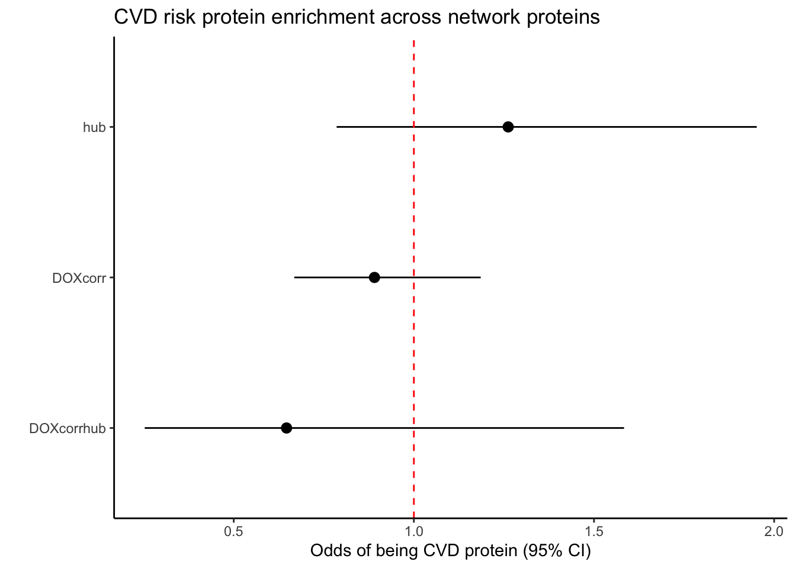
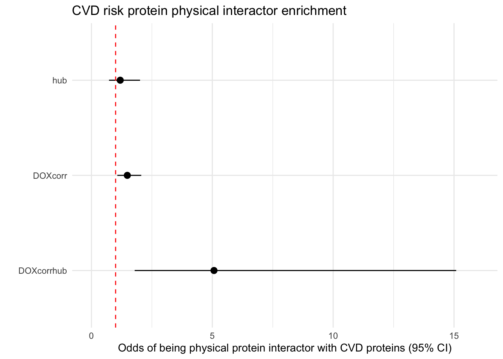
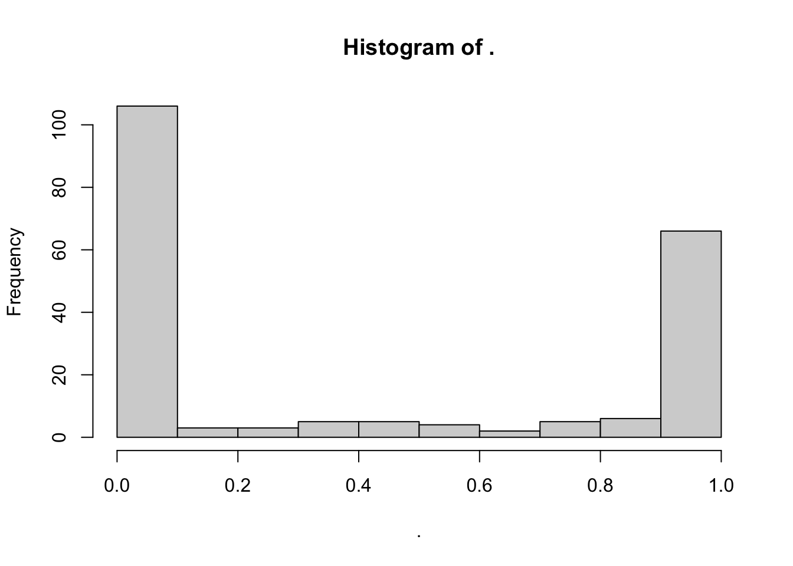
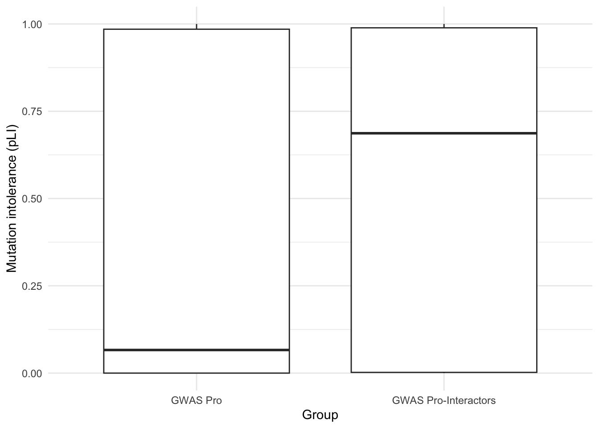
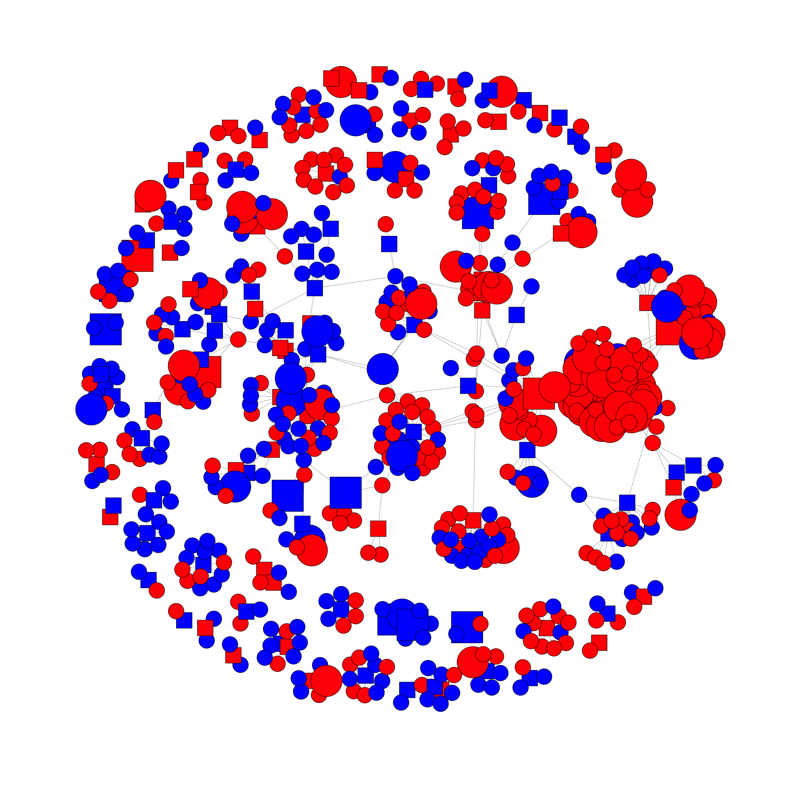
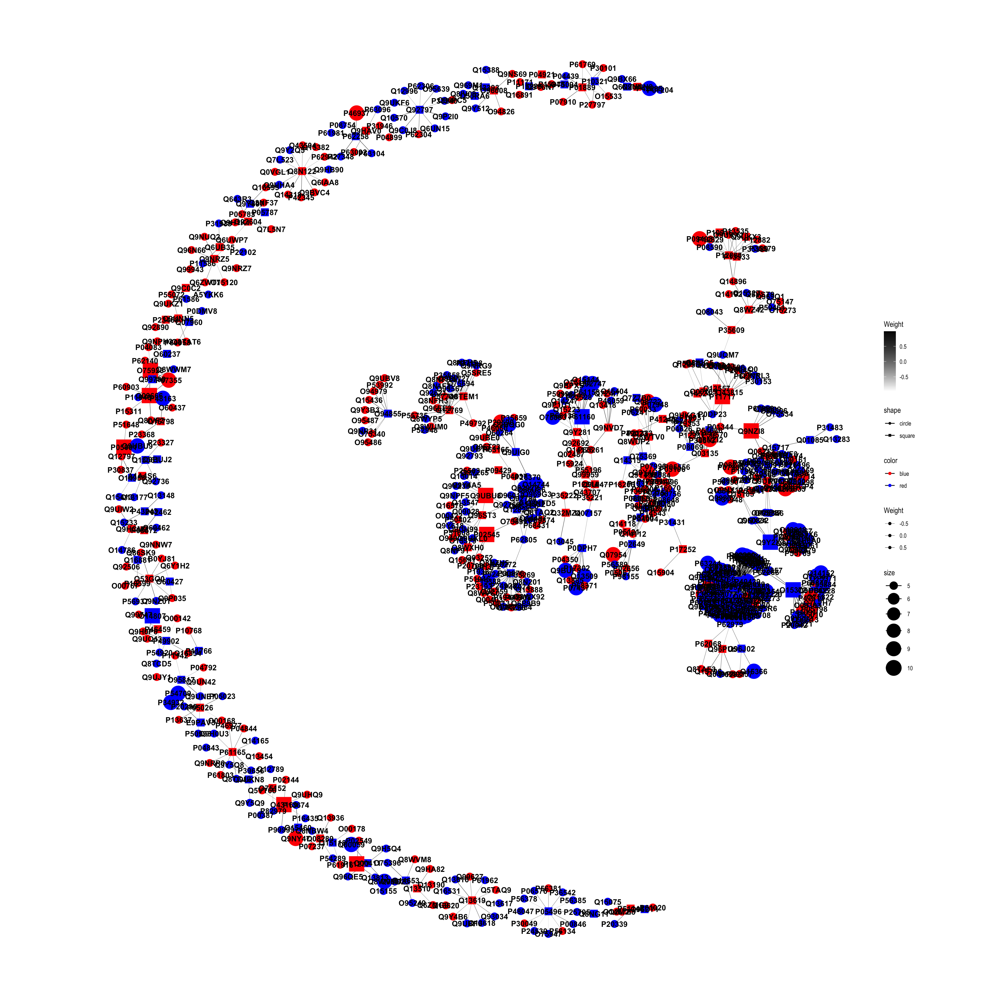
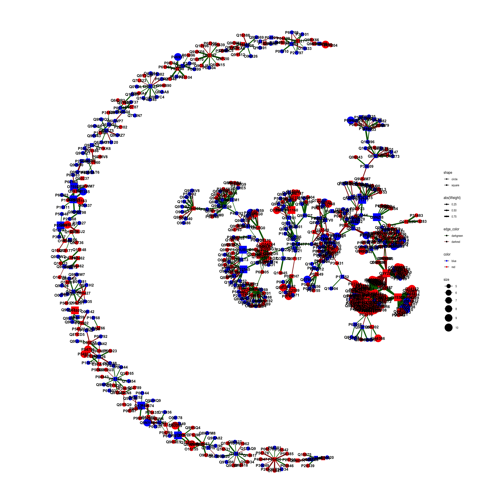
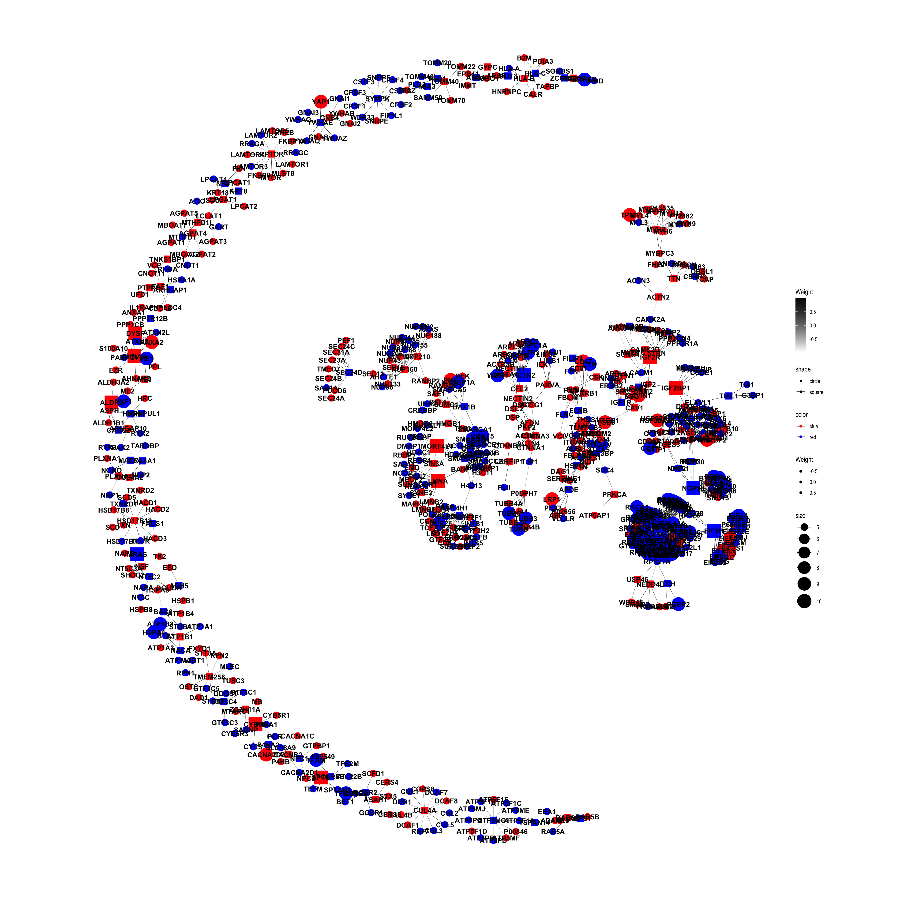

DOX_prot_Fig6_PPI
Omar Johnson
2024-12-08
Last updated: 2024-12-08
Checks: 7 0
Knit directory: DNA_damage_DOX/
This reproducible R Markdown analysis was created with workflowr (version 1.7.1). The Checks tab describes the reproducibility checks that were applied when the results were created. The Past versions tab lists the development history.
Great! Since the R Markdown file has been committed to the Git repository, you know the exact version of the code that produced these results.
Great job! The global environment was empty. Objects defined in the global environment can affect the analysis in your R Markdown file in unknown ways. For reproduciblity it’s best to always run the code in an empty environment.
The command set.seed(20241207) was run prior to running
the code in the R Markdown file. Setting a seed ensures that any results
that rely on randomness, e.g. subsampling or permutations, are
reproducible.
Great job! Recording the operating system, R version, and package versions is critical for reproducibility.
Nice! There were no cached chunks for this analysis, so you can be confident that you successfully produced the results during this run.
Great job! Using relative paths to the files within your workflowr project makes it easier to run your code on other machines.
Great! You are using Git for version control. Tracking code development and connecting the code version to the results is critical for reproducibility.
The results in this page were generated with repository version 5596b63. See the Past versions tab to see a history of the changes made to the R Markdown and HTML files.
Note that you need to be careful to ensure that all relevant files for
the analysis have been committed to Git prior to generating the results
(you can use wflow_publish or
wflow_git_commit). workflowr only checks the R Markdown
file, but you know if there are other scripts or data files that it
depends on. Below is the status of the Git repository when the results
were generated:
Ignored files:
Ignored: .DS_Store
Note that any generated files, e.g. HTML, png, CSS, etc., are not included in this status report because it is ok for generated content to have uncommitted changes.
These are the previous versions of the repository in which changes were
made to the R Markdown (analysis/DOX_prot_Fig6_PPI.Rmd) and
HTML (docs/DOX_prot_Fig6_PPI.html) files. If you’ve
configured a remote Git repository (see ?wflow_git_remote),
click on the hyperlinks in the table below to view the files as they
were in that past version.
| File | Version | Author | Date | Message |
|---|---|---|---|---|
| Rmd | 5596b63 | Omar-Johnson | 2024-12-08 | Publish |
Load Libraries
Read in Data
Functions
6B-Odds of being CVD pro
BigGWASsumstat <- read_tsv(file = File_path_1)Rows: 5709 Columns: 15
── Column specification ────────────────────────────────────────────────────────
Delimiter: "\t"
chr (13): riskAllele, pValueAnnotation, riskFrequency, orValue, beta, ci, ma...
dbl (2): pValue, pubmedId
ℹ Use `spec()` to retrieve the full column specification for this data.
ℹ Specify the column types or set `show_col_types = FALSE` to quiet this message.BigGWASsumstat_sep <- separate_rows(BigGWASsumstat, mappedGenes, sep = ",")
BigGWASsumstat_sep %>% nrow()[1] 7843GWAS_Traits_to_remove <- BigGWASsumstat_sep[BigGWASsumstat_sep$mappedGenes == "-", ]$traitName %>% unique()
BigGWASsumstat_sep_filt <- BigGWASsumstat_sep[!BigGWASsumstat_sep$traitName %in% GWAS_Traits_to_remove, ]
CVD_GWAS_genes <- BigGWASsumstat_sep_filt$mappedGenes %>% unique()
GWAS_pros <- PPI_Name_Key[PPI_Name_Key$hgnc_symbol %in% CVD_GWAS_genes, ]$uniprotswissprot
pQTL_data_summary_merged <- Toptable_Modules
pQTL_data_summary_merged <- pQTL_data_summary_merged %>%
mutate(Is_hub = if_else(Toptable_Modules$Protein %in% hubs$Gene, 1, 0))
pQTL_data_summary_merged <- pQTL_data_summary_merged %>%
mutate(Is_DA = if_else(P.Value < 0.05, 1, 0))
pQTL_data_summary_merged <- pQTL_data_summary_merged %>%
mutate(Is_GWAS = if_else(Protein %in% GWAS_pros, 1, 0))
pQTL_data_summary_merged <- pQTL_data_summary_merged %>%
mutate(Is_DOXcorr = if_else((Modules %in% c("green","darkgreen","midnightblue","salmon","lightyellow")), 1, 0))
result_pLI_DOXcorr <- perform_fisher_test_FP(vec1 = pQTL_data_summary_merged$Is_DOXcorr, vec2 = pQTL_data_summary_merged$Is_GWAS, vec1_name = "DAP", vec2_name = "GWAS_Pro", plot = FALSE)
result_pLI_HUB <- perform_fisher_test_FP(vec1 = pQTL_data_summary_merged$Is_hub, vec2 = pQTL_data_summary_merged$Is_GWAS, vec1_name = "Hub", vec2_name = "GWAS_Pro", plot = FALSE)
pQTL_data_summary_merged_hubs <- pQTL_data_summary_merged[pQTL_data_summary_merged$Is_hub == TRUE, ]
result_pLI_DOX_corr_hub <- perform_fisher_test_FP(vec1 = pQTL_data_summary_merged_hubs$Is_DOXcorr, vec2 = pQTL_data_summary_merged_hubs$Is_GWAS, vec1_name = "DOXcorr hub", vec2_name = "GWAS_Pro", plot = TRUE)
FP_List <- list(result_pLI_DOX_corr_hub, result_pLI_HUB, result_pLI_DOXcorr)
FP_DF <- data.frame(
Odds_ratio = numeric(length(FP_List)),
Lower_CI = numeric(length(FP_List)),
Upper_CI = numeric(length(FP_List)),
Pval = numeric(length(FP_List))
)
for (i in 1:length(FP_List)) {
FP_DF$Odds_ratio[i] <- FP_List[[i]]$Odds_ratio
FP_DF$Lower_CI[i] <- FP_List[[i]]$Confidence_Interval[1]
FP_DF$Upper_CI[i] <- FP_List[[i]]$Confidence_Interval[2]
FP_DF$Pval[i] <- FP_List[[i]]$PValue
}
# Add row names for the labels in the forest plot
FP_DF$Label <- c("DOXcorrhub", "hub", "DOXcorr")
FP_DF$Label <- factor(FP_DF$Label, levels = rev(c( "hub", "DOXcorr", "DOXcorrhub")))
ggplot(FP_DF, aes(x = Label, y = Odds_ratio, ymin = Lower_CI, ymax = Upper_CI)) +
geom_pointrange() +
geom_hline(yintercept = 1, linetype = "dashed", color = "red") +
coord_flip() +
labs(
title = "CVD risk protein enrichment across network proteins",
x = "",
y = "Odds of being CVD protein (95% CI)"
) +
theme_classic()
6D-Odds of being CVD-PPI
Enrichment_DF_ALL_GWASuni <- Enrichment_DF_ALL_GWASuni %>%
mutate(Is_DOXcorr = if_else(Enrichment_DF_ALL_GWASuni$Modules %in% c("green","darkgreen","midnightblue","salmon","lightyellow"), 1, 0))
FP_DOXcorr_PPI <- perform_fisher_test_FP(vec1 = Enrichment_DF_ALL_GWASuni$Is_GWAS_PPI, vec2 = Enrichment_DF_ALL_GWASuni$Is_DOXcorr, vec1_name = "PPI with GWAS protein", vec2_name = "DOXcorr.Hub", plot = TRUE)
FP_Hub_PPI <- perform_fisher_test_FP(vec1 = Enrichment_DF_ALL_GWASuni$Is_GWAS_PPI, vec2 = Enrichment_DF_ALL_GWASuni$Is_Hub, vec1_name = "PPI with GWAS protein", vec2_name = "DAPs", plot = TRUE)
Enrichment_DF_ALL_GWASuni_hub <- Enrichment_DF_ALL_GWASuni[Enrichment_DF_ALL_GWASuni$Is_Hub == 1, ]
FP_DOXcorr_Hub_PPI <- perform_fisher_test_FP(vec1 = Enrichment_DF_ALL_GWASuni_hub$Is_GWAS_PPI, vec2 = Enrichment_DF_ALL_GWASuni_hub$Is_DOXcorr.Hub, vec1_name = "PPI with GWAS protein", vec2_name = "DOX Corr. hub", plot = TRUE)
FP_List <- list(FP_DOXcorr_Hub_PPI, FP_Hub_PPI, FP_DOXcorr_PPI)
FP_DF <- data.frame(
Odds_ratio = numeric(length(FP_List)),
Lower_CI = numeric(length(FP_List)),
Upper_CI = numeric(length(FP_List)),
Pval = numeric(length(FP_List))
)
for (i in 1:length(FP_List)) {
FP_DF$Odds_ratio[i] <- FP_List[[i]]$Odds_ratio
FP_DF$Lower_CI[i] <- FP_List[[i]]$Confidence_Interval[1]
FP_DF$Upper_CI[i] <- FP_List[[i]]$Confidence_Interval[2]
FP_DF$Pval[i] <- FP_List[[i]]$PValue
}
# Add row names for the labels in the forest plot
FP_DF$Label <- c("DOXcorrhub", "hub", "DOXcorr")
FP_DF$Label <- factor(FP_DF$Label, levels = rev(c("hub", "DOXcorr", "DOXcorrhub")))
ggplot(FP_DF, aes(x = Label, y = Odds_ratio, ymin = Lower_CI, ymax = Upper_CI)) +
geom_pointrange() +
geom_hline(yintercept = 1, linetype = "dashed", color = "red") +
coord_flip() +
labs(
title = "CVD risk protein physical interactor enrichment",
x = "",
y = "Odds of being physical protein interactor with CVD proteins (95% CI)"
) +
theme_minimal()+
ylim(c(0,16))
6C-CVD-pro vs CVD-PPI pLI scores
pLI_Data <- read.csv(file = File_path_2, header = TRUE)
pLI_Data_sub <- merge(pLI_Data, New_RNA_PRO_DF_3, by.x = "gene", by.y = "hgnc_symbol")
pLI_Data_sub2 <- pLI_Data_sub[,c(1,2,3)]
Toptable_Modules_pLI <- merge(Toptable_Modules, pLI_Data_sub2, by.x = "Protein" , by.y = "Protein")
# CVD protein pLI distribution
Toptable_Modules_pLI[Toptable_Modules_pLI$Is_CVD_protein == 1, ]$pLI %>% hist()
# CVD protein-PPI pLI distrbution
Toptable_Modules_pLI[Toptable_Modules_pLI$Is_CVD_PPI_protein == 1, ]$pLI %>% hist()
wilcox.test(Toptable_Modules_pLI[Toptable_Modules_pLI$Is_CVD_protein == 1, ]$pLI, Toptable_Modules_pLI[Toptable_Modules_pLI$Is_CVD_PPI_protein == 1, ]$pLI)
Wilcoxon rank sum test with continuity correction
data: Toptable_Modules_pLI[Toptable_Modules_pLI$Is_CVD_protein == 1, ]$pLI and Toptable_Modules_pLI[Toptable_Modules_pLI$Is_CVD_PPI_protein == 1, ]$pLI
W = 46186, p-value = 0.0001457
alternative hypothesis: true location shift is not equal to 0pLI_Boxplot <- data.frame(
values = c(Toptable_Modules_pLI[Toptable_Modules_pLI$Is_CVD_protein == 1, ]$pLI,
Toptable_Modules_pLI[Toptable_Modules_pLI$Is_CVD_PPI_protein == 1, ]$pLI),
group = factor(c(rep("GWAS Pro", length(Toptable_Modules_pLI[Toptable_Modules_pLI$Is_CVD_protein == 1, ]$pLI)), rep("GWAS Pro-Interactors", length(Toptable_Modules_pLI[Toptable_Modules_pLI$Is_CVD_PPI_protein == 1, ]$pLI))))
)
# Create boxplot
ggplot(pLI_Boxplot, aes(x = group, y = values)) +
geom_boxplot() +
labs(x = "Group", y = "Mutation intolerance (pLI)") +
theme_minimal()
8E- CVD pro PPI network
gwas_proteins <- Toptable_Modules[Toptable_Modules$Is_CVD_protein == 1, ]$Protein
##### Net-1####
# Create the igraph object from the specific columns
g <- graph_from_data_frame(d = CVD_net[, c("query_term1", "query_term2", "Weight")], directed = FALSE)
# Annotate the graph with additional information
V(g)$is_hub <- V(g)$name %in% hubs$Gene
V(g)$is_dox_correlated <- V(g)$name %in% Toptable_Modules[Toptable_Modules$Modules %in% c("green", "darkgreen", "midnightblue", "salmon", "lightyellow"), ]$Protein
V(g)$is_cvd_pro <- V(g)$name %in% gwas_proteins
# Set vertex size based on is_hub
V(g)$size <- ifelse(V(g)$is_hub, 10, 5) # Hubs will be larger
# Set vertex shape based on is_cvd_pro
V(g)$shape <- ifelse(V(g)$is_cvd_pro, "square", "circle") # CVD proteins will be square
# Set vertex color based on is_dox_correlated
V(g)$color <- ifelse(V(g)$is_dox_correlated, "red", "blue") # Dox correlated proteins will be red, others blue
# Option1
# Plot the graph
plot(g, vertex.label = NA) 
##### Net-2 #####
# Create the igraph object from the specific columns
g <- graph_from_data_frame(d = CVD_net[, c("query_term1", "query_term2", "Weight")], directed = FALSE)
# Convert igraph object to tidygraph object
tg <- as_tbl_graph(g)
# Annotate the graph with additional information
tg <- tg %>%
mutate(is_hub = name %in% hubs$Gene,
is_dox_correlated = name %in% Toptable_Modules[Toptable_Modules$Modules %in% c("green", "darkgreen", "midnightblue", "salmon", "lightyellow"), ]$Protein,
is_cvd_pro = name %in% gwas_proteins,
size = ifelse(is_hub, 10, 5), # Hubs will be larger
shape = ifelse(is_cvd_pro, "square", "circle"), # CVD proteins will be square
color = ifelse(is_dox_correlated, "red", "blue")) # Dox correlated proteins will be red, others blue
# Plot
ggraph(tg, layout = "kk") +
geom_edge_link0(aes(edge_color = Weight, edge_width = Weight), show.legend = TRUE) +
geom_node_point(aes(size = size, shape = shape, color = color), show.legend = TRUE) +
geom_node_text(aes(label = name), fontface = "bold") +
scale_edge_color_continuous(low = "white", high = "black") +
scale_edge_width(range = c(0.1, .2)) +
scale_size_continuous(range = c(5, 10)) + # Ensure the size range is the same as in the annotations
scale_shape_manual(values = c("circle" = 16, "square" = 15)) + # Use specific shapes
scale_color_manual(values = c("red", "blue")) + # Ensure the colors are used as in the annotations
theme_graph() +
coord_fixed()
#### Net-3 #####
# Convert igraph object to tidygraph object
tg <- as_tbl_graph(g)
# Annotate the graph with additional information
tg <- tg %>%
mutate(is_hub = name %in% hubs$Gene,
is_dox_correlated = name %in% Toptable_Modules[Toptable_Modules$Modules %in% c("green", "darkgreen", "midnightblue", "salmon", "lightyellow"), ]$Protein,
is_cvd_pro = name %in% gwas_proteins,
size = ifelse(is_hub, 10, 5), # Hubs will be larger
shape = ifelse(is_cvd_pro, "square", "circle"), # CVD proteins will be square
color = ifelse(is_dox_correlated, "red", "blue")) # Dox correlated proteins will be red, others blue
# Define edge color based on the sign of the weight
tg <- tg %>%
activate(edges) %>%
mutate(edge_color = ifelse(Weight > 0, "darkgreen", "darkred"))
# Plot the graph using ggraph
ggraph(tg, layout = "kk") +
geom_edge_link(aes(edge_color = edge_color, edge_width = abs(Weight)), show.legend = TRUE) +
geom_node_point(aes(size = size, shape = shape, color = color), show.legend = TRUE) +
geom_node_text(aes(label = name), fontface = "bold") +
scale_edge_color_manual(values = c("darkgreen" = "darkgreen", "darkred" = "darkred")) +
scale_edge_width(range = c(0.5, 2)) + # Thicker edges
scale_size_continuous(range = c(5, 10)) + # Ensure the size range is the same as in the annotations
scale_shape_manual(values = c("circle" = 16, "square" = 15)) + # Use specific shapes
scale_color_manual(values = c("red" = "red", "blue" = "blue")) + # Ensure the colors are used as in the annotations
theme_graph() +
coord_fixed()
##### Net-4 ####
# Network with protein names
Name_Key <- read.csv(file = "/Users/omarjohnson/Downloads/idmapping_2024_07_01.csv", header = TRUE)
Toptable_Modules_key <- merge(New_RNA_PRO_DF_3,Name_Key, by.x ="Protein" , by.y = "From" )
# Create the igraph object from the specific columns
g <- graph_from_data_frame(d = CVD_net[, c("query_term1", "query_term2", "Weight")], directed = FALSE)
# Create lookup vectors for Protein to Gene name conversion
protein_to_gene <- setNames(New_RNA_PRO_DF_3$hgnc_symbol, New_RNA_PRO_DF_3$Protein)
# Replace protein names in query_term1 and query_term2 with gene names using recode
CVD_net_2 <- CVD_net %>%
mutate(Gene1 = recode(query_term1, !!!protein_to_gene),
Gene2 = recode(query_term2, !!!protein_to_gene))
# Select the columns with Gene names and Weight
CVD_net_3 <- CVD_net_2 %>%
select(Gene1, Gene2, Weight)
# Create the igraph object from the specific columns
g <- graph_from_data_frame(d = CVD_net_3, directed = FALSE)
# Convert igraph object to tidygraph object
tg <- as_tbl_graph(g)
New_RNA_PRO_DF_3_hubs <- merge(New_RNA_PRO_DF_3, hubs, by.x = "Protein", by.y = "Gene")
# Annotate the graph with additional information
tg <- tg %>%
mutate(is_hub = name %in% New_RNA_PRO_DF_3_hubs$hgnc_symbol,
is_dox_correlated = name %in% New_RNA_PRO_DF_3[New_RNA_PRO_DF_3$Modules %in% c("green", "darkgreen", "midnightblue", "salmon", "lightyellow"), ]$hgnc_symbol,
is_cvd_pro = name %in% CVD_GWAS_genes,
size = ifelse(is_hub, 10, 5), # Hubs will be larger
shape = ifelse(is_cvd_pro, "square", "circle"),
# CVD proteins will be square
color = ifelse(is_dox_correlated, "red", "blue")) # CVD proteins will be square
ggraph(tg, layout = "kk") +
geom_edge_link0(aes(edge_color = Weight, edge_width = Weight), show.legend = TRUE) +
geom_node_point(aes(size = size, shape = shape, color = color), show.legend = TRUE) +
geom_node_text(aes(label = name), fontface = "bold") +
scale_edge_color_continuous(low = "white", high = "black") +
scale_edge_width(range = c(0.1, .2)) +
scale_size_continuous(range = c(5, 10)) + # Ensure the size range is the same as in the annotations
scale_shape_manual(values = c("circle" = 16, "square" = 15)) + # Use specific shapes
scale_color_manual(values = c("red", "blue")) + # Ensure the colors are used as in the annotations
theme_graph() +
coord_fixed()
sessionInfo()R version 4.4.1 (2024-06-14)
Platform: x86_64-apple-darwin20
Running under: macOS Sonoma 14.6.1
Matrix products: default
BLAS: /Library/Frameworks/R.framework/Versions/4.4-x86_64/Resources/lib/libRblas.0.dylib
LAPACK: /Library/Frameworks/R.framework/Versions/4.4-x86_64/Resources/lib/libRlapack.dylib; LAPACK version 3.12.0
locale:
[1] en_US.UTF-8/en_US.UTF-8/en_US.UTF-8/C/en_US.UTF-8/en_US.UTF-8
time zone: America/Chicago
tzcode source: internal
attached base packages:
[1] stats4 stats graphics grDevices utils datasets methods
[8] base
other attached packages:
[1] tidygraph_1.3.1 igraph_2.0.3
[3] ggraph_2.2.1 scales_1.3.0
[5] impute_1.78.0 WGCNA_1.72-5
[7] fastcluster_1.2.6 dynamicTreeCut_1.63-1
[9] BioNERO_1.12.0 reshape2_1.4.4
[11] ggridges_0.5.6 biomaRt_2.60.1
[13] UpSetR_1.4.0 DOSE_3.30.4
[15] org.Hs.eg.db_3.19.1 AnnotationDbi_1.66.0
[17] clusterProfiler_4.12.6 pheatmap_1.0.12
[19] qvalue_2.36.0 cluster_2.1.6
[21] ggfortify_0.4.17 lubridate_1.9.3
[23] forcats_1.0.0 stringr_1.5.1
[25] dplyr_1.1.4 purrr_1.0.2
[27] readr_2.1.5 tidyr_1.3.1
[29] tibble_3.2.1 ggplot2_3.5.1
[31] tidyverse_2.0.0 RColorBrewer_1.1-3
[33] RUVSeq_1.38.0 edgeR_4.2.1
[35] limma_3.60.4 EDASeq_2.38.0
[37] ShortRead_1.62.0 GenomicAlignments_1.40.0
[39] SummarizedExperiment_1.34.0 MatrixGenerics_1.16.0
[41] matrixStats_1.4.1 Rsamtools_2.20.0
[43] GenomicRanges_1.56.2 Biostrings_2.72.1
[45] GenomeInfoDb_1.40.1 XVector_0.44.0
[47] IRanges_2.38.1 S4Vectors_0.42.1
[49] BiocParallel_1.38.0 Biobase_2.64.0
[51] BiocGenerics_0.50.0 workflowr_1.7.1
loaded via a namespace (and not attached):
[1] fs_1.6.4 bitops_1.0-8 enrichplot_1.24.2
[4] httr_1.4.7 doParallel_1.0.17 backports_1.5.0
[7] tools_4.4.1 utf8_1.2.4 R6_2.5.1
[10] mgcv_1.9-1 lazyeval_0.2.2 GetoptLong_1.0.5
[13] withr_3.0.1 prettyunits_1.2.0 gridExtra_2.3
[16] preprocessCore_1.66.0 cli_3.6.3 network_1.18.2
[19] scatterpie_0.2.4 labeling_0.4.3 sass_0.4.9
[22] genefilter_1.86.0 yulab.utils_0.1.7 foreign_0.8-87
[25] gson_0.1.0 R.utils_2.12.3 rstudioapi_0.16.0
[28] RSQLite_2.3.7 generics_0.1.3 gridGraphics_0.5-1
[31] shape_1.4.6.1 BiocIO_1.14.0 hwriter_1.3.2.1
[34] vroom_1.6.5 GO.db_3.19.1 Matrix_1.7-0
[37] interp_1.1-6 fansi_1.0.6 abind_1.4-8
[40] R.methodsS3_1.8.2 lifecycle_1.0.4 whisker_0.4.1
[43] yaml_2.3.10 SparseArray_1.4.8 BiocFileCache_2.12.0
[46] grid_4.4.1 blob_1.2.4 promises_1.3.0
[49] crayon_1.5.3 pwalign_1.0.0 lattice_0.22-6
[52] cowplot_1.1.3 annotate_1.82.0 GenomicFeatures_1.56.0
[55] KEGGREST_1.44.1 pillar_1.9.0 knitr_1.48
[58] ComplexHeatmap_2.20.0 fgsea_1.30.0 rjson_0.2.22
[61] codetools_0.2-20 fastmatch_1.1-4 glue_1.7.0
[64] getPass_0.2-4 ggfun_0.1.6 data.table_1.16.0
[67] vctrs_0.6.5 png_0.1-8 treeio_1.28.0
[70] gtable_0.3.5 cachem_1.1.0 aroma.light_3.34.0
[73] xfun_0.47 S4Arrays_1.4.1 coda_0.19-4.1
[76] survival_3.7-0 iterators_1.0.14 statmod_1.5.0
[79] nlme_3.1-166 ggtree_3.12.0 bit64_4.0.5
[82] progress_1.2.3 filelock_1.0.3 GENIE3_1.26.0
[85] rprojroot_2.0.4 bslib_0.8.0 rpart_4.1.23
[88] Hmisc_5.1-3 colorspace_2.1-1 DBI_1.2.3
[91] nnet_7.3-19 tidyselect_1.2.1 processx_3.8.4
[94] bit_4.0.5 compiler_4.4.1 curl_5.2.2
[97] git2r_0.35.0 httr2_1.0.4 htmlTable_2.4.3
[100] intergraph_2.0-4 xml2_1.3.6 ggdendro_0.2.0
[103] DelayedArray_0.30.1 shadowtext_0.1.4 rtracklayer_1.64.0
[106] checkmate_2.3.2 callr_3.7.6 rappdirs_0.3.3
[109] digest_0.6.37 rmarkdown_2.28 RhpcBLASctl_0.23-42
[112] base64enc_0.1-3 htmltools_0.5.8.1 pkgconfig_2.0.3
[115] jpeg_0.1-10 highr_0.11 dbplyr_2.5.0
[118] fastmap_1.2.0 htmlwidgets_1.6.4 rlang_1.1.4
[121] GlobalOptions_0.1.2 UCSC.utils_1.0.0 farver_2.1.2
[124] jquerylib_0.1.4 jsonlite_1.8.8 statnet.common_4.9.0
[127] GOSemSim_2.30.2 R.oo_1.26.0 RCurl_1.98-1.16
[130] magrittr_2.0.3 ggnetwork_0.5.13 Formula_1.2-5
[133] GenomeInfoDbData_1.2.12 ggplotify_0.1.2 patchwork_1.2.0
[136] munsell_0.5.1 Rcpp_1.0.13 ape_5.8
[139] viridis_0.6.5 minet_3.62.0 stringi_1.8.4
[142] zlibbioc_1.50.0 MASS_7.3-61 plyr_1.8.9
[145] parallel_4.4.1 ggrepel_0.9.6 deldir_2.0-4
[148] graphlayouts_1.1.1 splines_4.4.1 hms_1.1.3
[151] circlize_0.4.16 locfit_1.5-9.10 ps_1.8.0
[154] XML_3.99-0.17 evaluate_0.24.0 latticeExtra_0.6-30
[157] tzdb_0.4.0 foreach_1.5.2 tweenr_2.0.3
[160] httpuv_1.6.15 polyclip_1.10-7 clue_0.3-65
[163] ggforce_0.4.2 xtable_1.8-4 restfulr_0.0.15
[166] NetRep_1.2.7 tidytree_0.4.6 later_1.3.2
[169] viridisLite_0.4.2 aplot_0.2.3 memoise_2.0.1
[172] sva_3.52.0 timechange_0.3.0